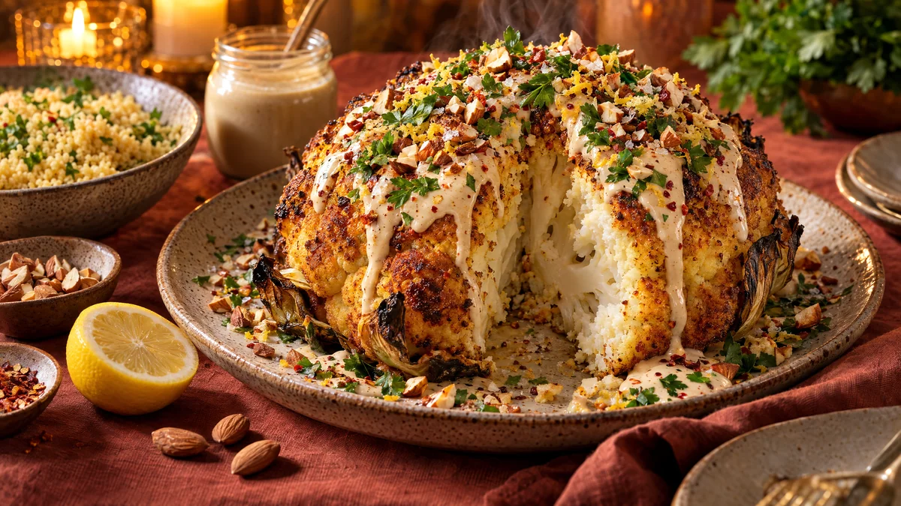

RESTFEST · RECEPTHuvudrätt · Tillbehör
Helrostad blomkål med tahinisås, citron och rostade mandlar
Ett helt blomkålshuvud, en burk tahini och en citron. Blomkålen förkokas, penslas med kryddolja och rostas hel i ugnen tills den är gyllene och krispig utanpå och mjuk som smör inuti. Den bärs in hel på ett fat under tahinisås, mandlar, persilja och chili, och skärs upp vid bordet som en söndagsstek.
- Förberedelse
- 15 min
- Tillagning
- 60 min
- Portioner
- 4
- Nivå
- Medelsvårt
 Det här behöver du
Det här behöver du
JÄMFÖRT MED DIN KYL
Tryck på + vid det du behöver köpa.
Blomkål
Tahinisås
Till servering
Gör så här
- Sätt ugnen på 220 grader. Skär bort de grövsta bladen men låt några små blad sitta kvar, de blir krispiga. Skär stocken plan så att huvudet står stadigt.
- Koka upp en stor kastrull med vatten och salt. Sänk ner hela blomkålen med stocken nedåt och koka i 6–8 minuter, tills en kniv går lätt in i stocken. Lyft upp den och låt den ånga av och torka i 5 minuter.
- Rör ihop olivolja, spiskummin, paprikapulver, gurkmeja och salt. Ställ blomkålen i en ugnsform eller gjutjärnspanna och pensla kryddoljan över hela huvudet, även in mellan buketterna.
- Rosta i mitten av ugnen i 40–50 minuter, tills blomkålen är djupt gyllenbrun och krispig på ytan. Pensla med oljan i formen halvvägs.
- Rör ihop tahini, citronsaft och vitlök. Tahinin stelnar först, men blir slät och krämig när du rör ner vattnet, en matsked i taget. Smaka av med salt.
- Rosta mandlarna i en torr stekpanna i 3–4 minuter och hacka dem grovt.
Dekoration och servering
- Ställ blomkålen hel på ett stort fat och ringla tahinisåsen över i breda band, så att den rinner ner längs sidorna.
- Strö över mandlar, persilja, chiliflakes och citronskal, och avsluta med olivolja och flingsalt.
- Bär in den hel och skär den i tårtbitar vid bordet.
- Servera med couscous eller bulgur, och gärna fokaccian i recept 59.
- Romescon i recept 25 passar också fint som sås.
Mått och ugnstemperaturer
Måtten är svenska (dl, msk, tsk, krm). Ugnstemperaturerna gäller vanlig ugn med över- och undervärme; med varmluft, sänk med 20 grader.